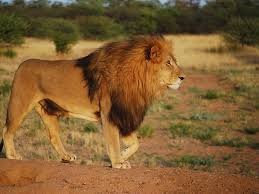
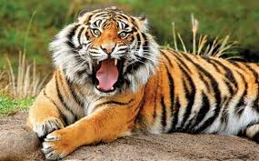
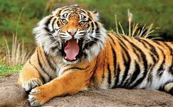

ვეფხვი (ლათ. Panthera tigris) — მტაცებელი ძუძუმწოვარი კატისებრთა ოჯახის, პანტერათა გვარის წარმომადგენელი. ვეფხვი კატისებრთა ოჯახის ყველაზე დიდი წარმომადგენელია, სხეულის სიგრძე 1,4–2,8 მ, კუდის — 0,6–1,1 მ, წონა 100–300 კგ. წაგრძელებული სხეული მოხატული აქვს განივი ზოლებით. გავრცელებულია ჩრდილოეთ კორეაში, ჩინეთში, ინდოეთში, ინდოჩინეთში, მალაის არქიპელაგზე, ჩრდილოეთ ირანში, უსურისა და ამურის მხარეებში, თალიშში, ამუდარიის ხეობაში, იშვიათად თურქმენეთში. ვეფხვი ნადირობს მსხვილ ძუძუმწოვრებზე, იშვიათად ფრინველებზე, ქვეწარმავლებზე და სხვა. თავს ესხმის ადამიანსაც. ვეფხვი 2–3 წელიწადში ერთხელ შობს თვალაუხილავ, უსუსურ 2–4 ბოკვერს (მაკეობა 105 დღემდეა).2 წლის ასაკიდან უკვე საკმაო ძალა აქვს დამოუკიდებლად სანადიროდ, სქესობრივ სიმწიფეს აღქევს 4–5 წლისა, ცოცხლობს საშუალოდ 8–10 წელს. აქვს 6–7 მ სიგრძის ნახტომი.[2] ქართულ ზეპირსიტყვიერებაში და ძვ. მწერლობაში სიტყვა „ვეფხვი“ აღნიშნავდა ჯიქს (ლეოპარდს ანუ პანთერას — Panthera pardus), დღევანდელი გაგებით კი მხოლოდ XX საუკუნეში დამკვიდრდა.[2]
საქართველოშივეფხვი არ ბინადრობს. პირველად იგი XVIII საუკუნის დამლევს სოფელ ახმეტის მახლობლად მოკლეს. ეს ფაქტი აღნიშნული აქვს დავით მესხიშვილს. მონადირეებს იგი მეფე ერეკლესთვის მიურთმევიათ.[3] მეორედ 1922 წლის 4 დეკემბერს თბილისის მახლობლად, სოფელ ლელობთან მოკლეს. საქართველოში იგი აზერბაიჯანიდან მოხვდა. ვარაუდობენ, რომ ასეთი დიდი მანძილი ძუ ვეფხვის ძებნაში გაიარა. აზერბაიჯანიდან გარდაბნის ტყეში უნდა მოხვედრილიყო, შემდეგ — მანგლისში, მოგვიანებით ვეფხვმა მტკვრის მიდამოები დატოვა და მდინარე ხრამს ან ალგეთს მაღლა აუყვა. ამგვარად აღმოჩნდა თბილისიდან 23 კილომეტრით დაშორებულ სოფელ ლელობთან, სადაც გლეხების საქონელს ესხმოდა თავს[3]. ოთხმა ადგილობრივმა მონადირემ: გიორგი წითურიშვილმა, ალექსი წიკლაურმა, იოსებ წიკლაურმა და სიმონ ბექაურმა დიდი ძებნის შემდეგ მის ბუნაგს მიაკვლია და მოკლეს. მოკლული ვეფხვის ეგზემპლიარის დათვალიერებისას, მისი ტყავის ფერით, ნახატითა და აგრეთვე მესამე ღრძილის ე. წ. სიმხეცის კბილის არსებობით დადგინდა რომ ის ეკუთვნოდა კასპიურ ვეფხვს (Septeutrioriales). ეგზემპლიარი გადაეცა საქართველოს მუზეუმის ტაქსიმედრიულ ლაბორატორიას ფიტულის გასაკეთებლად[4].
ლომი (ლათ. Panthera leo) — მტაცებელი ძუძუმწოვარი კატისებრთა ოჯახის, პანტერათა გვარის წარმომადგენელი. მისი სხეულის სიგრძე (ხვადისა) 180-240 სმ, მასა 180-227 კგ აღწევს. ძუ ტანად ხვადზე უფრო პატარაა. ლომს აქვს ძლიერი მოქნილი სხეული, მასიური თავი, გრძელი დინგი, შავი ფუნჯით დაბოლოებული გრძელი კუდი. მოზრდილ ხვადს ფაფარიც აქვს, დანარჩენი ბალანი მოკლეა და მოყვითალო. ბოკვერი ხალებიანია. ცნობილია ლომის 2 ქვესახეობა - აფრიკული და აზიური. ლომი გავრცელებულია ეკვატორულ აფრიკაში (დაცულია ნაკრძალებში) და ინდოეთში (გუჯარეთის შტატი). VIII-X საუკუნეებში ლომი კავკასიაშიც ბინადრობდა. ცხროვრობს სავანებში, ნახევრად უდაბნოებში, იშვიათად უდაბნოებში. იკვებება ხერხემლიანი ცხოველებით, ჭამს აგრეთვე ლეშს, ნადირობს შებინდებისას და ღამით. ადამიანს იშვიათად ესხმის თავს. ბუნაგს იკეთებს გამოქვაბულში, ნაპრალში, ორმოში. აქვს ძლიერი ხმა, რომელიც საკმაოდ შორს ისმის. მაკეობა 105-112 დღემდე გრძელდება. შობს 3-4 თვალახელილ (ზოგჯერ თვალაუხილავ) ბოკვერს, მათი სხეულის სიგრძე 30 სმ, ხოლო მასა 400 გ აღწევს. სქესობრივად მწიფდება მე-4 წელს. ცოცხლობს 30-35 წელს (იშვიათად მეტს). ადვილად იწვრთნება, ტყვეობაშიც (ზოოპარკი, ზოობაღი) მრავლდება.
აზიური ლომი, ასევე ცნობილია როგორც ინდური ლომი (ლათ. Panthera leo persica) — ძუძუმწოვარი კატისებრთა ოჯახისა, ლომის ორი ქვესახეობიდან ერთ-ერთი. იგი ბინადრობს ინდოეთში. დღეისთვის შემორჩენილია მისი მხოლოდ ერთი პოპულაცია ინდოეთის გუჯარათის შტატში. იგი შეტანილია IUCN-ის წითელ ნუსხაში, რადგან გამოირჩევა საკმაოდ მცირე რაოდენობით. აზიური ლომი გავრცელებული იყო თურქეთში, სპარსეთში, მესოპოტამიაში, ინდოეთში, ცენტრალურ აზიაში, აღმოსავლეთით მდინარე ინდამდე. 2010 წლიდან მისი რაოდენობა სტაბილურად იზრდება გირის ტყის ეროვნულ პარკში. 2015 წლის მონაცემებით პარკში 523 ლომი იყო. აქედან 109 ზრდასრული მამალი, 201 ზრდასრული დედალი და 213 ბოკვერი.[1] აზიური ლომი შეფერილობით მუქი ყავისფერია. მამლებს აქვთ ფაფარი. ზრდასრული ლომის სიგრძეა დაახლოებით 1,95-2 მეტრი. მისი კუდი 80 სმ-მდეა. მამლის საშუალო წონაა 160-190 კგ. ხოლო დედლის 110-120 კგ.
დათვი (ლათ. Ursus) — ძუძუმწოვრების გვარი დათვისებრთა ოჯახისა. ზოგიერთი წარმომადგენლის სხეულის სიგრძეა 3 მეტრი, მასა 700 კგ-მდე. აქვთ ხშირი ბალნით შემოსილი სხეული, მძლავრი, ხუთთითა კიდურები, დიდი თავი, მოკლე კუდი. ძირითადად ტყის ბინადრები არიან. სამხრეთის სახეობები შერეული საკვებით იკვებებიან. მრავლდებიან 3–4 წლის ასაკში. მაკეობა 7 თვემდე გრძელდება. სიცოცხლის ხანგრძლივობა 30–40 წელია. გვარში 4 სახეობაა. საქართველოში ბინადრობს მურა დათვის სამი ქვესახეობა: სირიული მურა დათვი, ჩვეულებრივი მურა დათვი და კავკასიური მურა დათვი.
მურა დათვი (ლათ. Ursus arctos) — მტაცებელი, ძუძუმწოვარი, დათვისებრთა ოჯახისა. მისი სხეულის სიგრძე 2,5 მ-მდე, მასა 480 კგ-მდე აღწევს. გავრცელებულია ევროპაში, აზიაში, ჩრდილოეთ ამერიკაში, სადაც იგი „გრიზლის“ სახელითაა ცნობილი. ბინადრობს უმთავრესად მთლიანი ტყის მასივებში, კავკასიისა და შუა აზიის მთებში, ყველგან შედარებით მცირერიცხოვანია. ზოგან განადგურდა. იკვებება მცენარეული და ცხოველური საკვებით. შემოდგომაზე ბუნაგში წვება და ზამთრის ძილს ეძლევა. სძინავს 75-195 დღე. ზამთრის ძილი ზერელეა, ცხოველი საშიშროების შემთხვევაში ტოვებს ბუნაგს, იწყებს ხეტიალს და იკავებს ახალს. სამხრეთში, სადაც ზამთარი მცირეთოვლიანია. მურა დათვი ბუნაგში არ წვება. მაკეობა 7 თვემდე გრძელდება. 2 წელიწადში ერთხელ შობს 2-3, იშვიათად 4-5 ბელს. სქესობრივ სიმწიფეს აღწევს 3 წლისა. მცირე სარეწაო მნიშვნელობა აქვს, ტყავს იყენებენ უმთავრესად ნოხად, ხორცს - საკვებად. ზოგან აზიანებს ნათესებს, თავს ესხმის შინაურ ცხოველებს. ზამთრის გადასატანად მთავარი საშუალება კანქვეშ ცხიმის დაგროვებაა, რომლის სისქეც ზოგ ადგილას რვა სანტიმეტრს აღწევს. საშემოდგომოდ წონაში შეიძლება 130-დან 160 კილომდე მოიმატოს, რომლის დაახლოებით ერთი მესამედიც ცხიმია (ამ დროისთვის ხვადი დათვი შეიძლება 300 კილოს იწონიდეს). ბუნაგის მოსაწყობად ხელსაყრელი ადგილი შეიძლება იყოს მღვიმე, ჭიანჭველების მიტოვებული ბუდე ან ხეების ფესვებს შორის გაჩენილი ღრუ. მთავარია, რომ ადგილი მიუდგომელი იყოს. დათვი ნაძვის ხმელ ტოტებს, ხავსს, ტორფსა და სხვა „ქვეშაგებს“ ეზიდება, რათა რაც შეიძლება მყუდრო გახადოს თავისი საბინადრო. საინტერესოა, რომ თვითონ ბუნაგი ძალიანაც არ აღემატება დათვის ტანს. ზამთარში ბუნაგს თოვლი ფარავს და მხოლოდ სასუნთქი ხვრელი შეინიშნება. ზამთრის ძილის დროს დათვის ორგანიზმში მიმდინარე სასიცოცხლო პროცესები „დაზოგვის რეჟიმზეა“ გადასული. გულისცემა ძლიერ გაიშვიათებულია — წუთში ათჯერაც კი არ სცემს, და ნივთიერებათა ცვლაც შენელებულია. ძილის დროს ორგანიზმში არსებითად მნიშვნელოვანი პროცესი, ცხიმების წვა, იწყება. ცხიმების დაშლა აუცილებელი ენერგიითა და წყლით ამარაგებს ორგანიზმს. მიუხედავად იმისა, რომ სასიცოცხლო პროცესები შენელებულია, ნივთიერებათა ცვლის შედეგად მაინც წარმოიქმნება ნარჩენები. გამოყოფის ნაცვლად, სხეული მათ ხელახლა გადამუშავებას იწყებს. პროფესორი ჰისა განმარტავს: „აზოტის შემცველი შარდოვანას ნარჩენები ხელახლა შეიწოვება თირკმლებიდან და შარდის ბუშტიდან და სისხლის მიმოქცევის სისტემის მეშვეობით ნაწლავებში ხვდება, სადაც ბაქტერიების ზემოქმედების შედეგად შარდოვანა ჰიდროლიზს განიცდის და ამიაკად გარდაიქმნება“. კიდევ უფრო საოცარი ის არის, რომ ამიაკი, თავის მხრივ, ღვიძლში ბრუნდება, სადაც ის მონაწილეობას იღებს ახალი ამინომჟავების, ცილების უმთავრესი შემადგენელი ელემენტების, წარმოქმნაში. ამრიგად, დათვი ნარჩენების აუცილებელ კომპონენტებად გარდაქმნის წყალობით ინარჩუნებს ძალებს ბუნაგად ყოფნის ხანგრძლივი პერიოდის განმავლობაში. ძველად ხალხი ბუნაგად მყოფ დათვზე ნადირობდა. თავიდან ბუნაგს პოულობდნენ, შემდეგ თხილამურიანი მონადირეები თანდათანობით წრეს კრავდნენ მის გარშემო. ბოლოს დათვს აღვიძებდნენ და კლავდნენ. მაგრამ ზამთარში დათვებზე ნადირობა, დღესდღეობით, თითქმის მთელ ევროპაშია აკრძალული, რადგან ნადირობის ეს მეთოდი სისასტიკედ არის მიჩნეული.
.jpg)
.jpg)
.jpg) 
